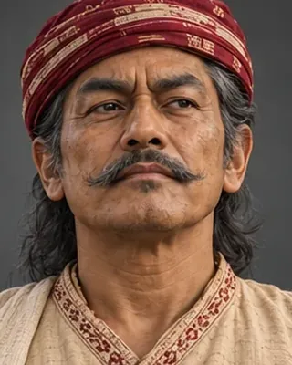

1814–1816
বদন চন্দ্ৰ বৰফুকন
d. 1817–1818 · Borphukan of Guwahati

Went to the Burmese court in 1816 seeking help against Purnananda Burhagohain and returned with an army in 1817. Assassinated by Subedar Rup Singh.
Sources give 1817 or 1818 for the assassination; the Wikipedia article gives 1818.
Record confidence: medium.